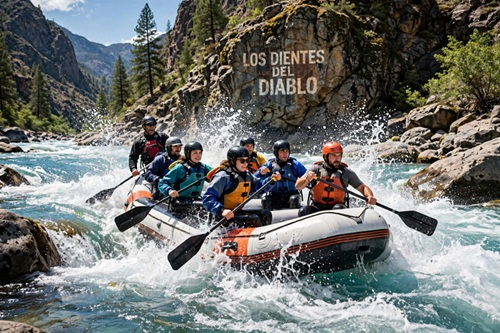
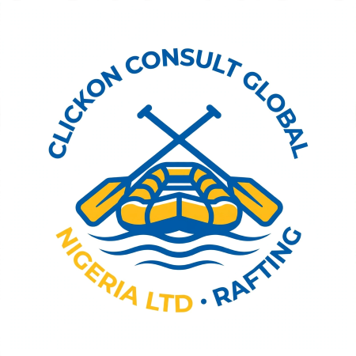
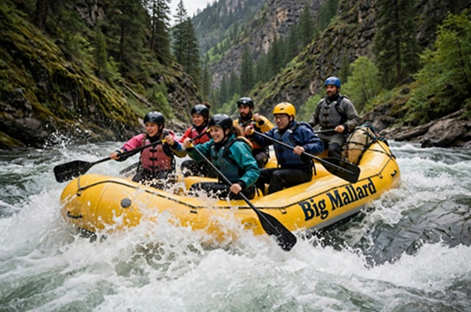
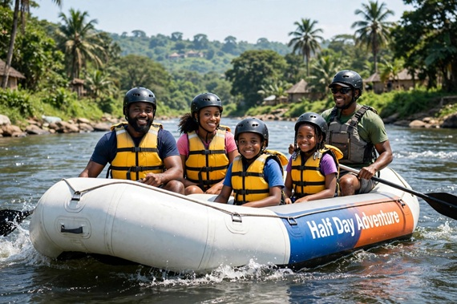

Half Day Adventure
Perfect for beginners! 3 hours on calm to moderate rapids. Learn paddling, enjoy beautiful views, and have fun with family and friends.

Have questions? Contact us to plan your perfect rafting adventure.
Contact Us
Perfect for beginners! 3 hours on calm to moderate rapids. Learn paddling, enjoy beautiful views, and have fun with family and friends.

Our most popular trip! 6 hours of thrilling rapids, lunch on the river bank, and memories that will last a lifetime. For ages 12 and above.

Relaxing and safe for kids! Gentle floating, swimming stops, and games on the river. Perfect for families, schools, and church groups.
| Trip Name | Duration | Difficulty | Price |
|---|---|---|---|
| Half Day Adventure | 3 Hours | Easy | ₦25,000 |
| Full Day Rapids Expedition | 6 Hours | Moderate to Hard | ₦45,000 |
| Family Float Trip | 4 Hours | Easy | ₦30,000 |